Data Management Aid
Hover over each orb to explore DMA's sectoral experience and achievements.
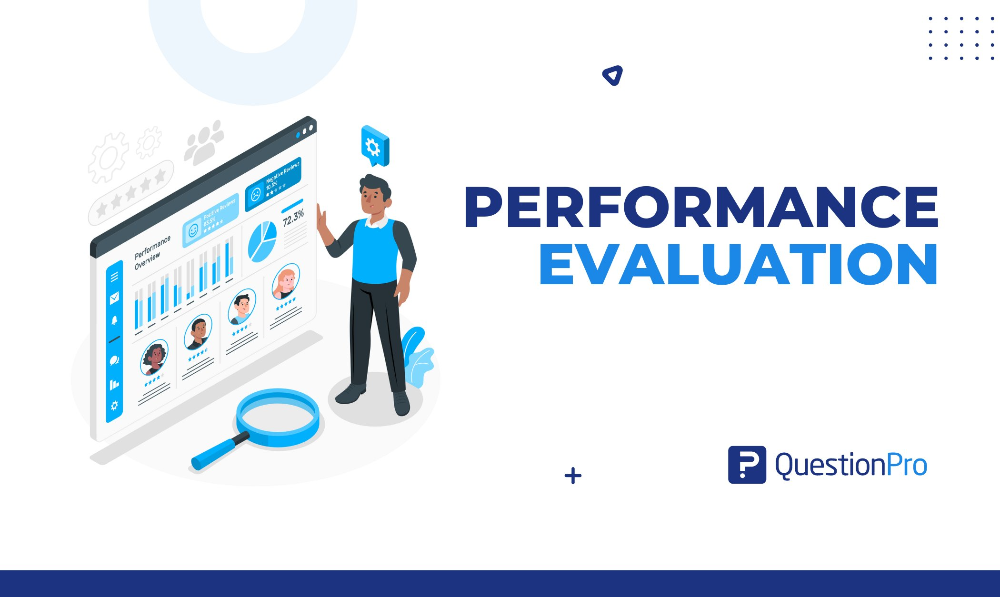
DMA takes Organizational Development and Change Management approach to institutional development and capacity building. It pursues a planned and long-term process of organizational strengthening.
Our approach is based on appreciative methodologies and customized with client organizations' needs. We accompany organizations in capacity building planning and provide follow-up through support systems.
Through evidence-based research, DMA supports government agencies, development partners, NGOs and private sector organizations to improve performance, strengthen institutional capacity and achieve sustainable development outcomes.
Our evaluation studies focus on effectiveness, efficiency, relevance, sustainability and impact, ensuring that stakeholders receive reliable information for informed decision-making.
Explore ongoing and completed evaluation projects across sectors.
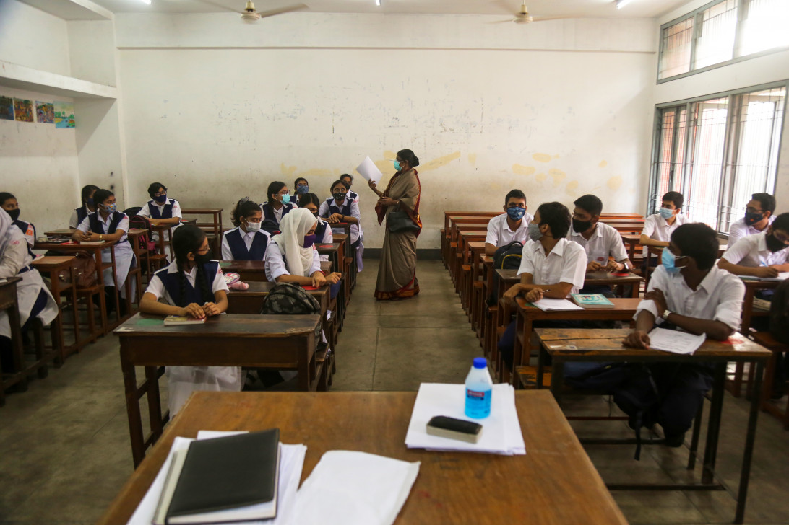
Comprehensive evaluation of education programs focusing on learning outcomes and teacher training.

Evaluation of teacher training effectiveness across multiple schools.
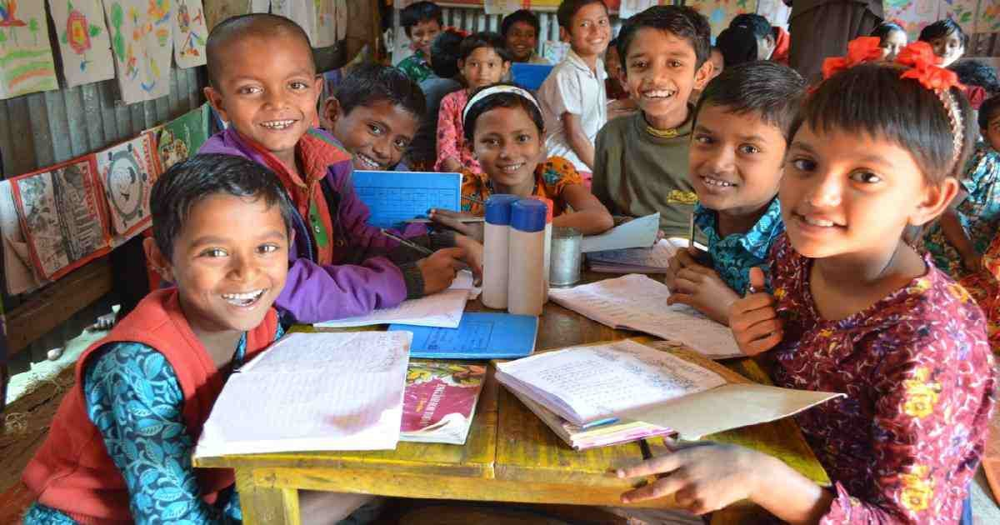
Teacher Training Program Evaluation of teacher training effectiveness across multiple schools.
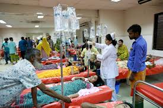
Monitoring and evaluation of health interventions in communities.
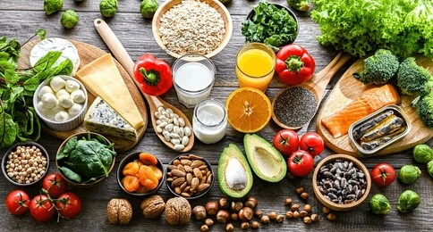
Assessment of local hospital services and patient care.

Emergency Health Response Program of local hospital services and patient care.
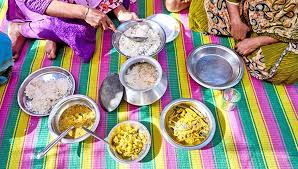
Monitoring and evaluation of nutrition interventions in communities.
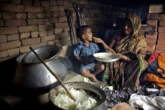
Nutrition and Hygiene Education interventions in communities.
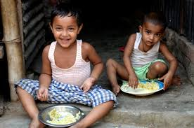
Nutrition for Vulnerable Groups.
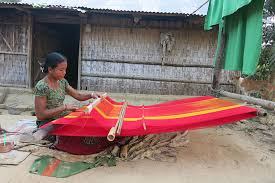
Monitoring and evaluation of livelihood interventions.
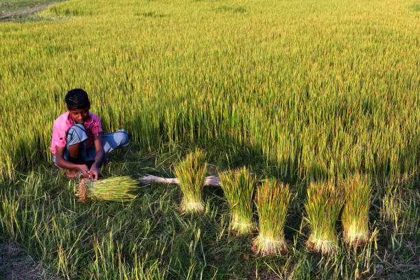
Assessment of small business development programs.
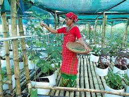
Assessment of Community Livelihood Development

Monitoring and evaluation of livelihood interventions.
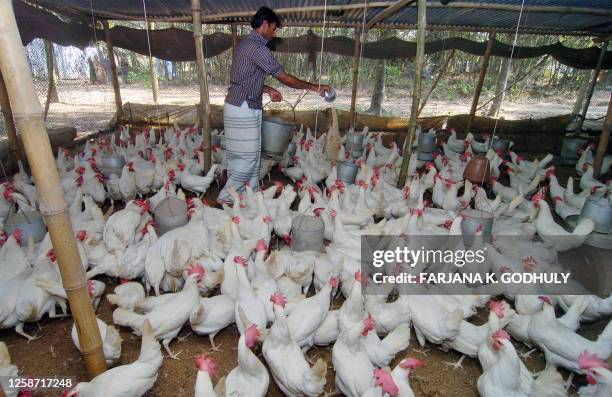
Assessment of Poultry Development Project.
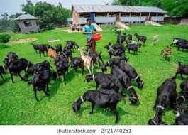
Assessment of small business development programs.
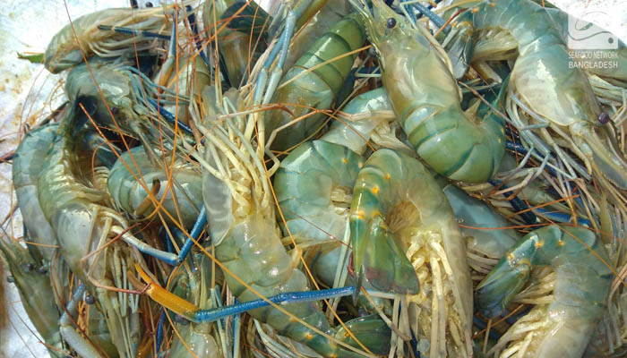
Monitoring and evaluation of livelihood interventions.
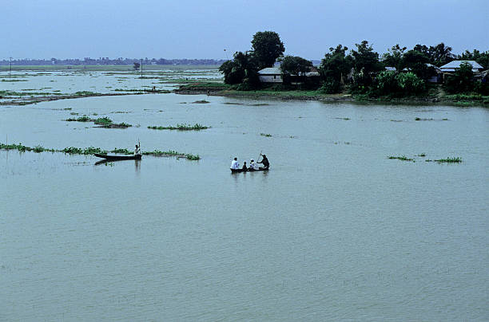
Climate Resilient Fisheries development programs.
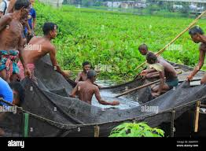
Sustainable Fisheries development programs.
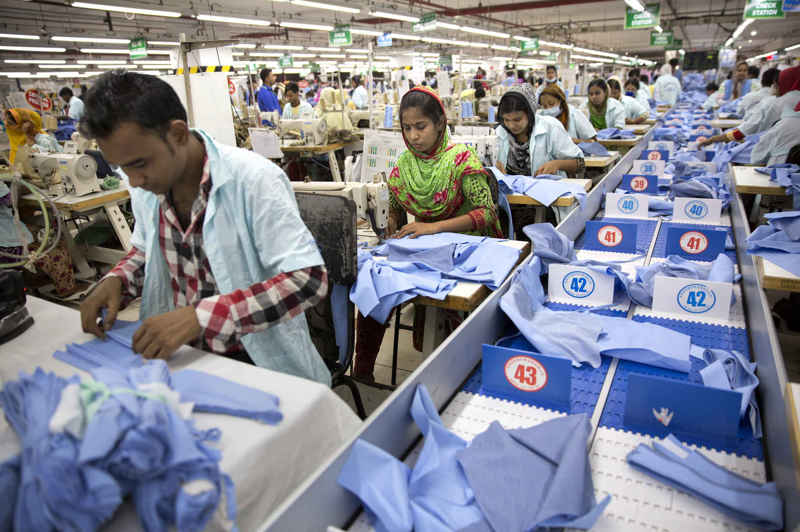
Monitoring and evaluation of RMG Worker Skill Development
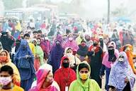
RMG Labor Rights Awareness development programs.
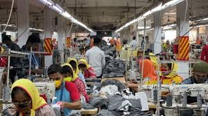
RMG Supply Chain Sustainability

Monitoring and evaluation of livelihood interventions.
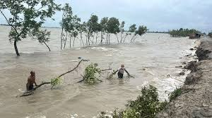
Climate Health Initiatives programs.
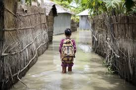
Assessment of small business development programs.
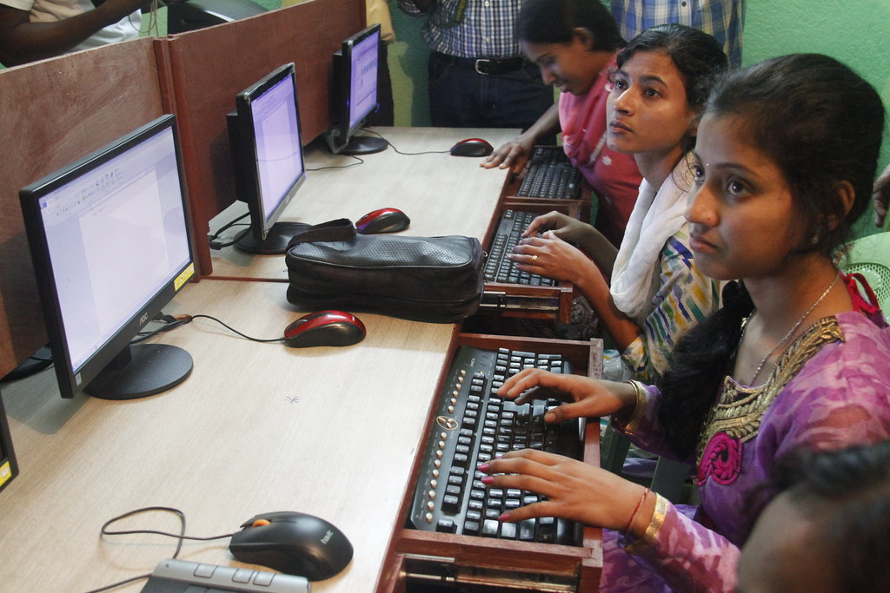
Monitoring and evaluation of Youth Leadership Program.
Youth Assessment development programs.

Assessment of Youth development programs.
Access curated policy briefs, methodology sheets, and open evaluation abstracts.
A 3-year longitudinal impact study tracking behavioral shifts and sanitation coverage infrastructure sustainability.
Technical brief on deploying offline Computer-Assisted Personal Interviewing systems in low-connectivity clusters.